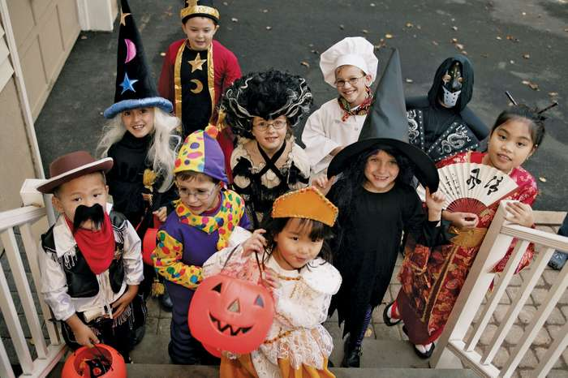
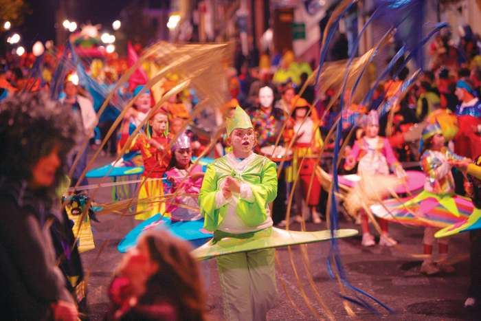

Halloween, contraction of All Hallows’ Eve, a holiday observed on October 31, the evening before All Saints’ (or All Hallows’) Day. The celebration marks the day before the Western Christian feast of All Saints and initiates the season of Allhallowtide, which lasts three days and concludes with All Souls’ Day. In much of Europe and most of North America, observance of Halloween is largely nonreligious. Halloween is celebrated on Saturday,October 31, 2020.

Halloween had its origins in the festival of Samhain among the Celts of ancient Britain and Ireland. On the day corresponding to November 1 on contemporary calendars, the new year was believed to begin. That date was considered the beginning of the winter period, the date on which the herds were returned from pasture and land tenures were renewed. During the Samhain festival the souls of those who had died were believed to return to visit their homes, and those who had died during the year were believed to journey to the otherworld. People set bonfires on hilltops for relighting their hearth fires for the winter and to frighten away evil spirits, and they sometimes wore masks and other disguises to avoid being recognized by the ghosts thought to be present. It was in those ways that beings such as witches, hobgoblins, fairies, and demons came to be associated with the day. The period was also thought to be favourable for divination on matters such as marriage, health, and death. When the Romans conquered the Celts in the 1st century CE, they added their own festivals of Feralia, commemorating the passing of the dead, and of Pomona, the goddess of the harvest.
